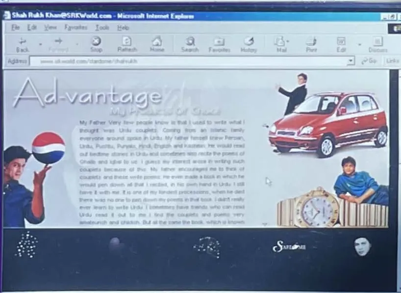

Room
Advantage · Advertising

SRKWorld.com, 2000: "Advantage", his advertising page, with Pepsi and the Hyundai Santro. (Archive: the author's collection)
A room for the brands. From the Hyundai Santro in 1998, one of the longest partnerships in Indian advertising, to Visa in 2026, he has sold more than films. (Fact. Storyboard18; Visa press release, 3 June 2026)
The first deal he typed himself. Hyundai set up in India in 1996 and was almost unknown; it launched the Santro in 1998 with Saatchi & Saatchi as its agency, weighed Shah Rukh Khan against Jackie Shroff, and chose the star of DDLJ and Dil To Pagal Hai. (Fact. Storyboard18) He hesitated because nobody knew the brand. Hyundai's former president BVR Subbu has said that Khan typed the first agreement himself. (Fact. Storyboard18) In 2002 he shot a Santro Xing film with a back injury, asking only not to run or dance. He went on to front the Creta and the Alcazar, called the partnership a "long marriage" in 2017, and was given the 1,100th Ioniq 5 in December 2023. (Fact. Storyboard18) By 2025 the association had passed 25 years. (Fact. afaqs, 3 November 2025) An actor who reads his own contracts is a businessman before he is an endorser. Interpretation
Endorsements with a published start year
| Year | Brand | Category | What happened | Source |
|---|---|---|---|---|
| 1988 | Liberty Shoes | Footwear | His first advertisement: India's first home-made sports shoes, to "Eye of the Tiger" | Storyboard18, 25 January 2023 |
| 1998 | Hyundai | Cars | Santro launch; later Creta and Alcazar; more than 25 years | Storyboard18; afaqs |
| 2005 | Lux | Soap | He became the "Lux girl", in a bathtub ringed by the brand's actresses | Storyboard18, 25 January 2023 |
| 2013 | Frooti | Drinks | Brand ambassador | afaqs, 3 November 2025 |
| 2021 | Cadbury (Mondelez) | Chocolate | "Not Just A Cadbury Ad": AI-made ads for local shops at Diwali | Storyboard18; exchange4media |
| 2024 | Castrol India | Engine oil | Face of the brand on TV, print and digital | afaqs |
| June 2024 | Myntra | Fashion e-commerce | "Trend IRL" campaign | afaqs |
| May 2025 | Candere (Kalyan Jewellers) | Jewellery | Label for younger buyers | afaqs |
| 3 June 2026 | Visa | Payments | Brand ambassador for India; "Infinitely More" campaign by Leo South Asia (Publicis) | Visa press release, 3 June 2026 |
Endorsements without a published start year. A 2019 survey of his advertising lists Nokia, Hero Puch, Mayur Suitings, Cinthol, Airtel, Linc, Sona Chandi, Pepsi, V-John, D'Decor, Fair and Handsome (Emami), Sunfeast, Mitsubishi, Compaq, Navratna Cool Talc, Videocon, Aqualite, Pepsodent, DHFL, Dish TV, Denver, ONN, BigBasket, BYJU'S, ICICI, Visit Dubai and Netflix, as well as the public campaigns of the National Rural Health Mission and Swachh Bharat Urban. (Fact. Social Samosa, 2 November 2019) Thums Up and Disney+ Hotstar followed. (Fact. Storyboard18, 25 January 2023) [Unverified: start and end year for each brand, from the advertisers or the agencies.] That is more than 35 brands in about 37 years. Fact, count from the sources above
Three ads that changed the category. Pepsi: the "Yeh Dil Maange More" films put him beside the Kuch Kuch Hota Hai cast and Sachin Tendulkar, and his presence is credited with helping Pepsi regain trust during the pesticide controversy. (Fact. Storyboard18, 25 January 2023) [Unverified: the year the Pepsi association began and ended.] Lux, 2005: the first man to be a "Lux girl" made a joke of his own sex appeal and of the brand's history. Fact, as above; Interpretation Fair and Handsome: a line in one film drew criticism about fairness creams; it is part of the record. (Fact. Storyboard18)
2021: the ad that gave his face away. For Diwali 2021, Cadbury's owner Mondelez, with Ogilvy, Wavemaker and the AI company Rephrase.ai, used machine learning to recreate his face and voice so that small local shops hit by Covid could each have their own Shah Rukh Khan advertisement naming their store. (Fact. exchange4media, 25 June 2022; Wavemaker, 27 June 2022) At Cannes Lions 2022 it won two Gold, one Silver and one Bronze Lion. (Fact. exchange4media) Wavemaker also lists a Titanium Lion. [Unverified: the Titanium Lion, from the Cannes Lions archive.] It did not win a Grand Prix. (Fact. Wavemaker) [Unverified: the number of shops, ads and postcodes, from Mondelez or Ogilvy.]
This is the most important ad in this book. Interpretation Five years before fans began making him with AI tools (Chapter 18), a brand did it with his consent and paid for it; the face was licensed, the use was named and the beneficiaries were small traders. It is the model Inquilaab argues for (Chapter 21). Interpretation
What his name is worth: celebrity brand valuations
| Year valued | Rank in India | Brand value (US$) | Valuer | Source |
|---|---|---|---|---|
| 2017 | 2 | N/A (not published in the source) | Duff & Phelps | Kroll release, 10 January 2019 |
| 2018 | 5 | 60.7 million | Duff & Phelps | Business Today, 11 January 2019 |
| 2019 | 5 | 66.1 million | Duff & Phelps | Gulf News, 7 February 2020 |
| 2020 | N/A (not retrieved) | N/A (not retrieved) | Duff & Phelps | [Unverified] |
| 2021 | N/A (not retrieved) | N/A (not retrieved) | Kroll | [Unverified] |
| 2022 | 10 | 55.7 million | Kroll | exchange4media, 21 March 2023 |
| 2023 | 3 | 120.7 million | Kroll | afaqs, 19 June 2024 |
| 2024 | 3 | 145.7 million | Kroll | Storyboard18, 25 September 2025 |
| 2025 | 1 | 177.9 million | Kroll | Manifest, 5 August 2026 |
Duff & Phelps' valuation business became Kroll; its annual report ranks the 25 most valuable celebrity brands in India. Fact. sources above Separately, Forbes India's Celebrity 100 ranked him first in 2012, 2013 and 2015. (Fact. Wikipedia: Shah Rukh Khan)
What the curve shows. The valuation follows the films, not the fame. It fell to 10th in 2022, at the end of the four years without a release (Chapter 13). It more than doubled, to US$120.7 million, in 2023, the year of Pathaan, Jawan and Dunki (Chapter 14). In 2025, at 60 and with no release that year, he was valued first in India, ahead of Ranveer Singh at US$162.9 million and Virat Kohli at US$158.4 million. Fact. sources above; Interpretation The fans stayed through the silence; the market came back with the box office. Interpretation
Advantage. The 2000 website called this room Advantage and showed Pepsi and the Santro. Archive: the author's collection, the screen above The joke was a tennis score. Interpretation Twenty-six years later the advantage is the same: an audience that trusts the face, and a face that, since 2021, can be licensed even when the man is not on set. Interpretation